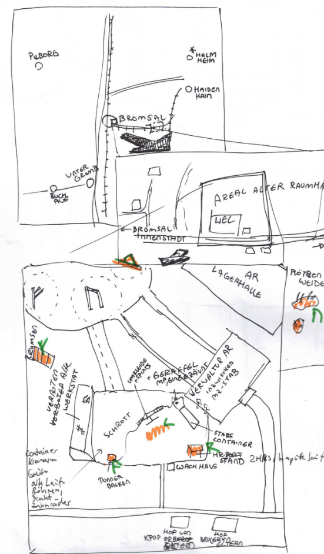
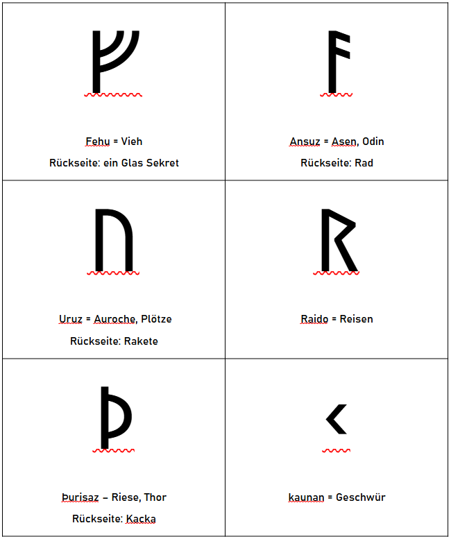

Wehrerziehungslager
Abenteuer - Walk-through
You meet in a Exerzierplatz
- Musterung auf dem Hof
- Stabskadett Heinlein über Heldenhaftigkeit
- Aufteilung in zwei Gruppen à 5 Kadetten
Schnitzeljagd
- init: bekommen jeder einen Löffel Hinog
- Brumsenstöcke – Rune ᚠ fehu – Brumsen stechen, in den Hinogwaben Hinweis, ein Glas Sekret im Stock
- Plötzenweide – Rune ᚢ uruz = Auerochse/Plötze, Hinweis hängt an Horn, Rückseite mit Rakete
- Landeplatz Þ – Rune ᚦ þurisaz = Riese, Container, mit Rune, Rückseite Kacka
- Donnerbalken – Rune ᚨ ansuz = Ase, Donnerbalken in Mitte, Rückseite Rad
- HR-Port – Rune ᚱ raido = Ritt Wagen, Rückseite:
- Exerzierplatz – ᚲ Kaunan = Geschwür
Abschluss
- erneute Musterung, Begutachtung der Anzüge
- Heinlein lobt den Einsatz
- Preis für das Gewinnerteam~~
Karte & Legende

Legende der Karte
1. Exerzierplatz
Ein staubiger, ockerfarbener Platz mit aufgesprungenem Boden. Weisse Kreidelinien markieren Marschwege. Rote Fähnchen flattern an krummen Metallpfählen. In der Ferne glühen rostige Lautsprecher im grellen Sonnenlicht.
2. Modularfaust mit Nachtigallerator (HR-Port)
Graublauer Kuppelbau mit leuchtenden Sensorstreifen in Orange. Der Nachtigallerator brummt leise – wie ein schnarchender Vogel. Zwei Hebrobotos stehen am Port:
- Klein & Neu: mattweiss mit blauen Lichtaugen.
- Gross & Alt: rostrot, wuchtig, mit abgeplatztem Lack und einem langsam mahlenden Arm.
3. Stabscontainer & Schrottfeld
Der Stabscontainer ist olivgrün, mit einer grellgelben Tür und Funkantenne. Daneben: das Schrottfeld. Alte Raumschiffteile liegen unter der roten Marskruste wie Knochen. Vieles glitzert silbern oder ist mit lila Rost überzogen – Relikte vom alten Raumhafen.
4. Wachhäuschen
Ein kleiner, würfelförmiger Posten aus sandfarbenem Komposit. Innen blinkt ein grünes Display. Aussen hängt eine zerschlissene Flagge. Ein übergrosser Helm liegt auf der Fensterbank – wohl vergessen.
5. Landeplatz des alten Raumhafens
Graubraune Betonplatten mit ausgebleichten Futhark-Zeichen, die unter dem Staub hervorblitzen. Zwischen den Rissen summen die Brumsenstöcke – dunkelviolett-glänzende Bienenröhren mit wächsernen Ringen, aus denen warmer Duft aufsteigt.
6. Verwaltungsgebäude
Reinweisser Blockbau mit spiegelnden Fenstern und blauen Leuchtstreifen. Zwei echte Soldaten stehen davor – grün-grau uniformiert, mit goldenen Rangabzeichen. Das Gebäude strahlt Ordnung, aber auch Angst aus.
7. Lagerhalle des alten Raumhafens
Breite Halle mit rostigen Wänden, die im Sonnenlicht orange schimmern. Drinnen stehen nur noch drei Container:
- Einer enthält vergilbte Marskarten und zerknickte Raumanzüge
- Einer ist mit Werkzeugresten und Stuhlteilen gefüllt
- Der dritte ist verschlossen, mit einem alten Symbol in Silber und Schwarz
8. Hof von Krop Orbs Eltern
Ein aus Blechteilen zusammengeschweisster Bauernhof mit rötlicher Schutzlackierung. Im Hof wachsen Marswurzeln aus künstlich bewässerten Rillen. Über allem liegt ein bronzefarbener Solarschirm. Ein Generator surrt freundlich.
9. Hof von Brul Eryns Eltern
Hellgelber Anbau an einem alten Frachtcontainer. In den Fenstern hängen blaue Tücher. Zwei klapprige Drohnen kreisen über kleinen Tiergehegen aus Netzstoff. Die Erde hier ist heller, fast sandweiss – ungewöhnlich für die Gegend.
10. Plötzenweide
Ein flacher Krater mit grün-grauen Futterstreifen. Die Plötzn sind plump und kuhartig, mit schimmernden Häuten in Violett, Beige oder Hellblau. Ihr Sekret tropft in tiefe Auffangschalen aus gebürstetem Stahl. In der Ferne stehen Windtürme, die surren wie Insekten.
Personae
1. Stabskadettin Heinlein
- Hobby: Alte Märchen über die Erde sammeln und nachspielen
- Geheimnis: Ihre Oma war früher eine berühmte Geschichtenerzählerin – doch ihre Bücher sind verboten
- Quest: Im Lagerarchiv eine versteckte Kiste mit den letzten Geschichten ihrer Oma finden – und retten, bevor der Inspektor kommt
2. Kommandantin Solan
- Rolle: Lagerleitung / Disziplin / Taktische Planung
- Funktion: Hat das letzte Wort im Lager. Führt mit klarem Blick und harter Stimme.
- Persönlichkeit: Kühl, strategisch, charismatisch. Kein Platz für Schwäche – aber gerecht.
- Hobby: Alte Märchen über die Erde sammeln und nachspielen
- Geheimnis: Ihre Oma war früher eine berühmte Geschichtenerzählerin – doch ihre Bücher sind verboten
- Quest: Im Lagerarchiv eine versteckte Kiste mit den letzten Geschichten ihrer Oma finden – und retten, bevor der Inspektor kommt
3. Furiemeister Kelv
- Rolle: Körperliche Ausbildung / Drill / Strafen
- Funktion: Zuständig für Ausdauertraining, Nahkampf und Lagerordnung.
- Persönlichkeit: Laut, unnachgiebig, hat immer einen Spruch auf den Lippen.
- Hobby: Miniaturmodelle von Marsfahrzeugen bauen und lackieren
- Geheimnis: Hat einen kleinen Bruder im Waisenhaus, den er heimlich besucht
- Quest: Genug Ersatzteile und Farben auftreiben, um dem Bruder ein funktionsfähiges Mini-Fahrzeug zu bauen – als Geburtstagsgeschenk
4. Wachhabende Veyra
- Rolle: Sicherheit / Nachtwache / Maschinenkontrolle
- Funktion: Kontrolliert Zugänge, kontrolliert Maschinen, beobachtet Kadetten heimlich
- Persönlichkeit: Still, fokussiert, fast schon unheimlich ruhig
- Hobby: Marskäfer beobachten und in einem Skizzenbuch festhalten
- Geheimnis: Ihre grosse Schwester wurde „versetzt“ – in Wahrheit versteckt sie sich in einem alten Versorgungstunnel
- Quest: Eine alte Taschenlampe und Batterien besorgen, um heimlich einen sicheren Weg zur Schwester zu finden – und sie mit Essen zu versorgen
5. Ausbilderin Fenn
- Rolle: Überlebenstraining / Geländeübungen / Notfallausbildung
- Funktion: Bringt den Kadetten bei, wie man im Ödland überlebt
- Persönlichkeit: Zäh, mitfühlend, heimlich rebellisch
- Hobby: Backt seltsame Kekse aus Marswurzeln und gibt ihnen Namen wie „Staubmuffin“
- Geheimnis: Ihr Cousin ist ein „langsamer Lerner“ – und soll in ein Speziallager kommen
- Quest: In die Lagerverwaltung schleichen, um seinen Bericht zu ändern – bevor der Transporter kommt
Kadettrollen – die Gegengruppe
1. Jaro – Späher
- Aufgabe: Kundschaften, Wege erkunden, Feinde oder Gefahren frühzeitig entdecken
- Typ: Wachsam, neugierig, oft ungeduldig
- Konfliktpotenzial: Neigt dazu, Regeln zu ignorieren und auf eigene Faust loszuziehen.
2. Mira – Schildträgerin
- Aufgabe: Beschützt schwächere Kameraden, hält die Gruppe zusammen, oft in vorderster Linie
- Typ: Loyal, mutig, etwas stur
- Konfliktpotenzial: Stellt sich selbst oft zu sehr in Gefahr, will niemanden enttäuschen.
3. Eli – Signalgeber
- Aufgabe: Gibt mit Flaggen, Pfeifen, Licht etc. Signale, hält Verbindung zur Basis
- Typ: Klug, ruhig, kommunikativ
- Konfliktpotenzial: Hat Angst, im entscheidenden Moment die falsche Botschaft zu senden.
4. Lleora - Quartiermeisterin (oder: "Versorgungskadettin")
- Aufgabe: Kümmert sich um Ausrüstung, Rationen, Karten und Logistik
- Typ: Ordentlich, praktisch, leicht reizbar
- Konfliktpotenzial: Fühlt sich oft unterschätzt, obwohl ohne sie nichts funktioniert.
5. Tomma – Feuerwart
- Aufgabe: Hüter des Lagerfeuers, der Rituale, der Geschichten und der Disziplin
- Typ: Stolz, traditionsbewusst, manchmal zu ernst Konfliktpotenzial: Besteht auf Regeln, auch wenn Flexibilität gefragt wäre.
6. Rika – Kartenleserin
- Aufgabe: Verantwortlich für Navigation, Kartenkunde, Wegplanung
- Typ: Klug, detailverliebt, manchmal etwas besserwisserisch
- Konfliktpotenzial: Vertraut mehr auf Karten als auf Instinkt – was in der Wildnis nicht immer hilft.
8. Linus – Lauscher
- Aufgabe: Lauscht auf entfernte Geräusche, Feindbewegungen oder geheime Gespräche
- Typ: Still, aufmerksam, wirkt oft unbeteiligt – ist es aber nie.
Handouts – Schnitzeljagd Hinweise

| Rune | Name | Lautwert |
|---|---|---|
| ᚠ | Fehu | f |
| ᚢ | Ūruz | u |
| ᚦ | Þurisaz | th |
| ᚨ | Ansuz | a |
| ᚱ | Raidō | r |
| ᚲ | Kaunan | k |
| ᚷ | Gebō | g |
| ᚹ | Wunjō | w |
| ᚺ | Hagalaz | h |
| ᚾ | Naudiz | n |
| ᛁ | Īsaz | i |
| ᛃ | Jēra | j |
| ᛈ | Perþo | p |
| ᛇ | Eihwaz | e |
| ᛉ | Algiz | a |
| ᛊ | Sōwilō, Sól | s |
| ᛏ | Sōwil | s |
| ᛊ | Tīwaz | t |
| ᛒ | Berkanan | b |
| ᛖ | Ehwaz | e |
| ᛗ | Mannaz | m |
| ᛚ | Laguz | l |
| ᛜ | Ingwaz | i |
| ᛞ | Sōwil | s |
| ᛟ | Ōþila | o |